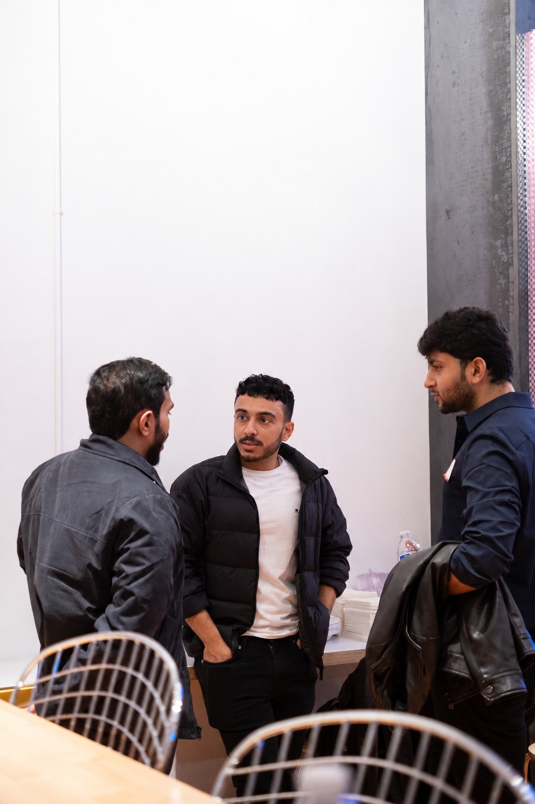
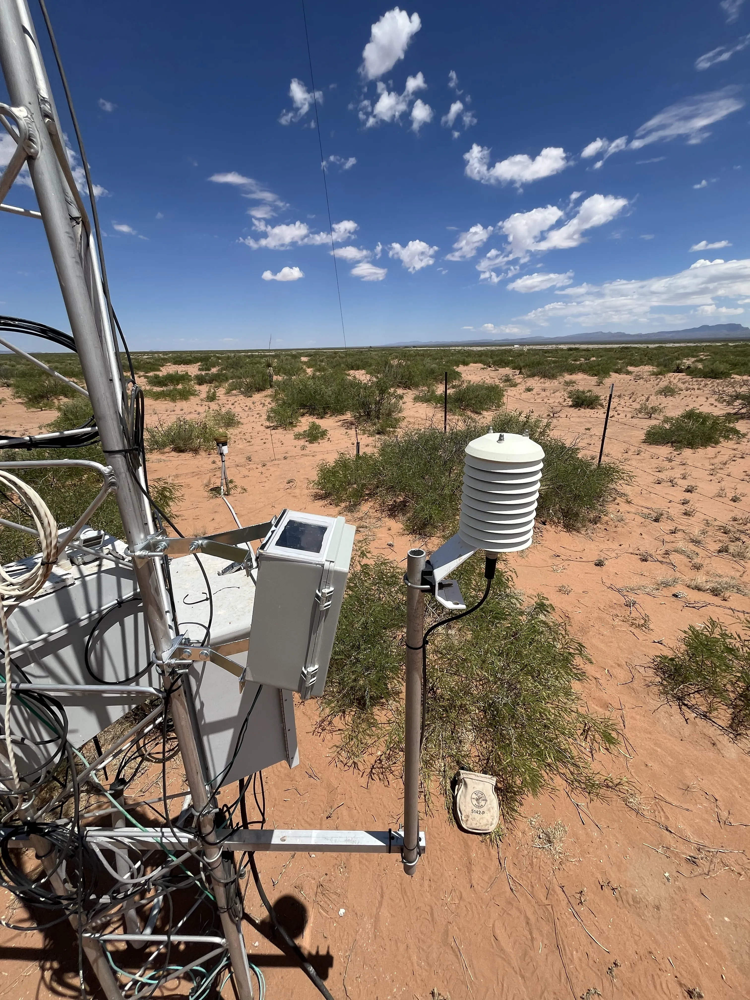
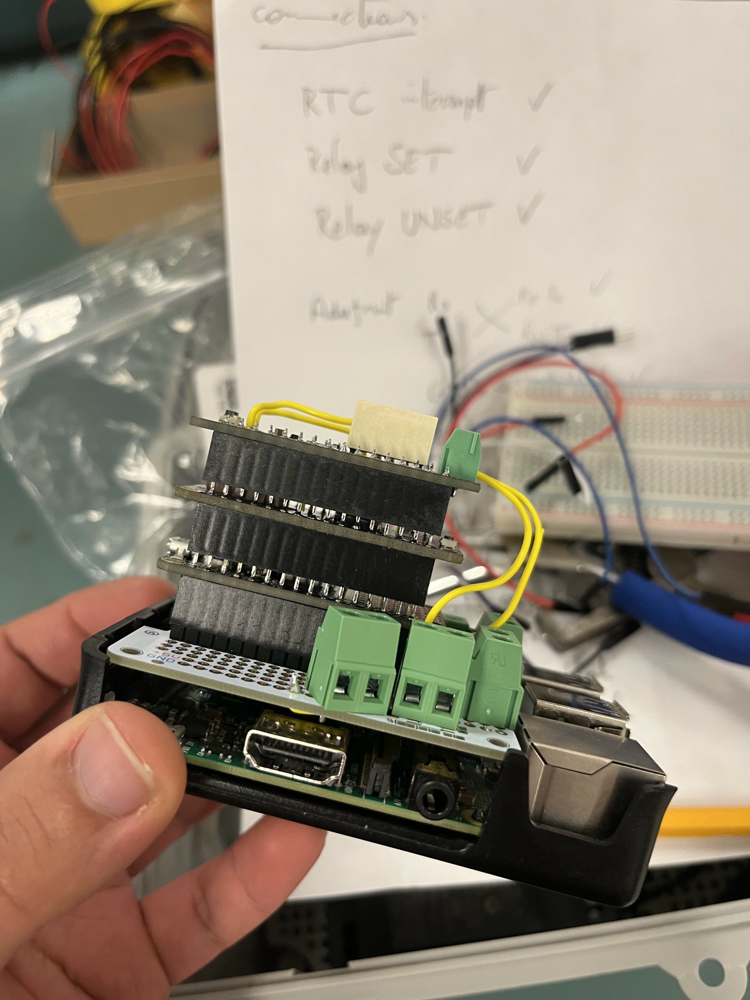
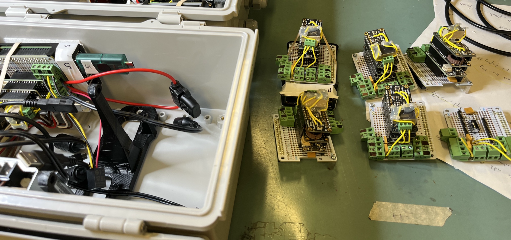
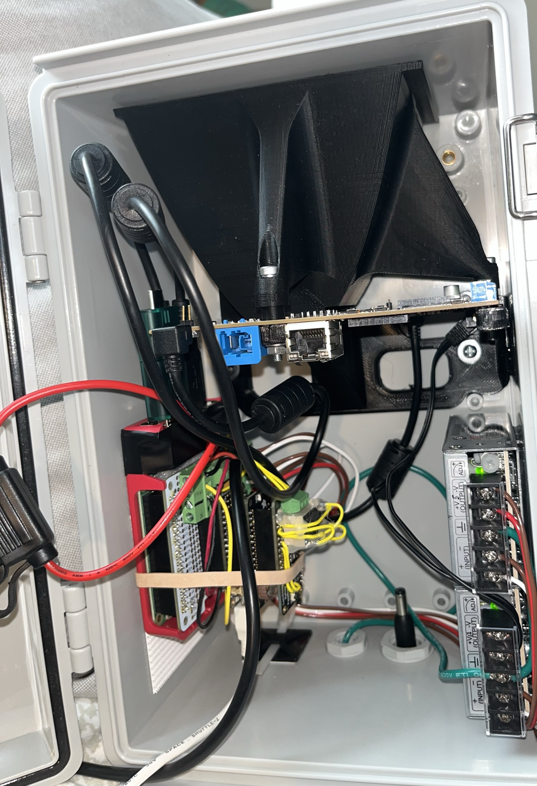
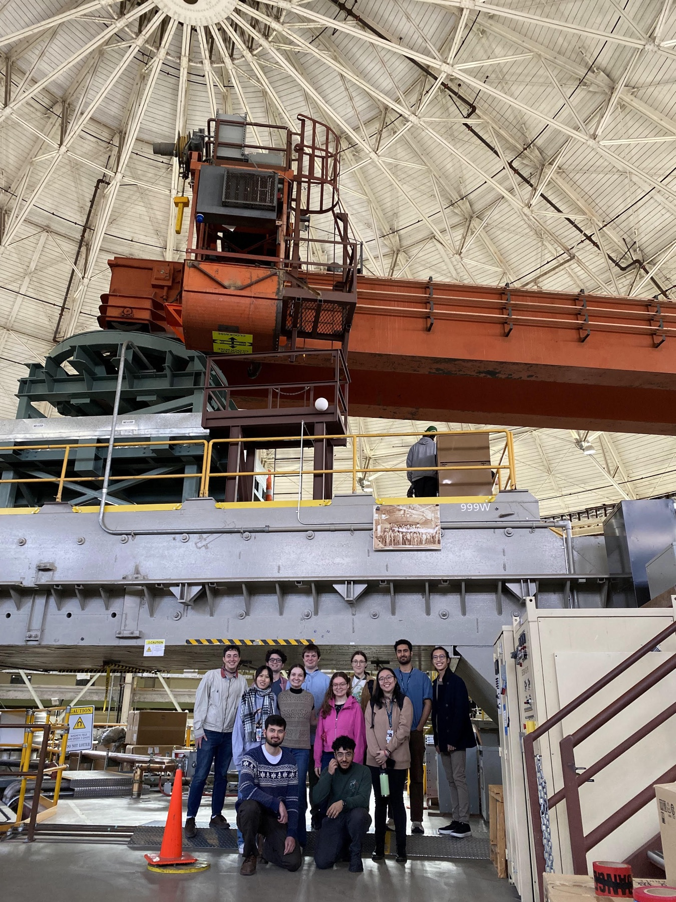
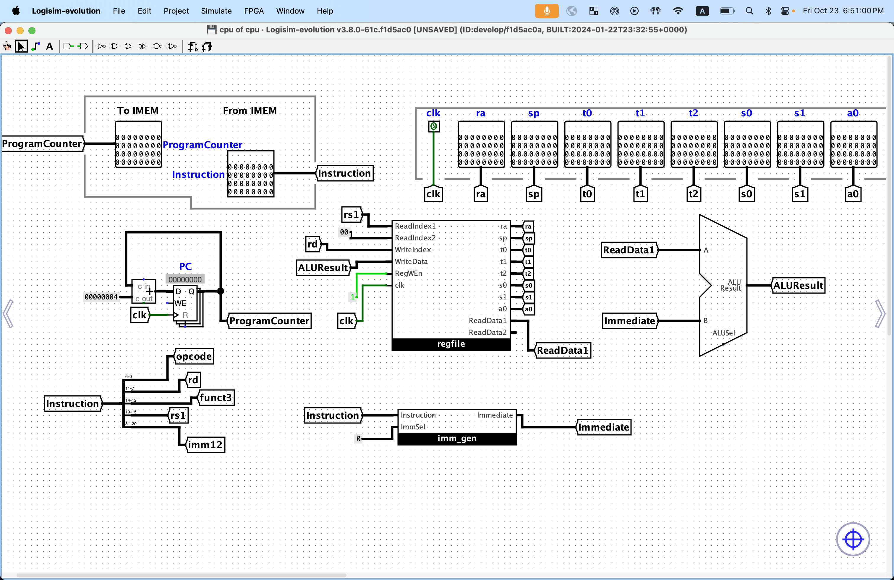
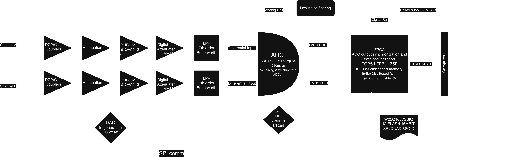
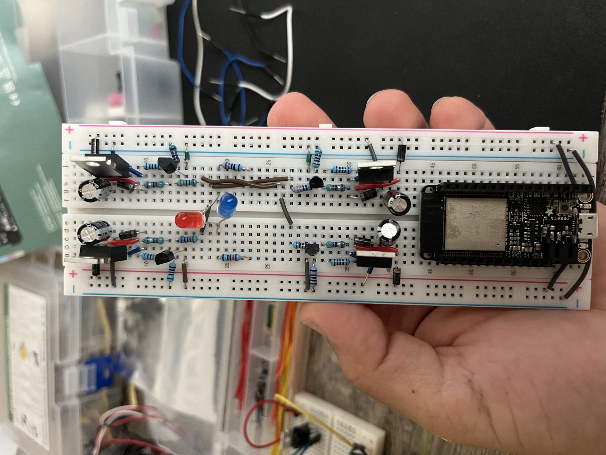

JAN 2026 — PRESENT
Undergraduate Research Assistant / Electrical Engineer Intern
Two 10-week full-time internships, with continued undergraduate research between and after them.
Mentor: Stijn Wielandt
ELECTRICAL ENGINEERING & COMPUTER SCIENCE
PORTFOLIO — 2026EECS student at UC Berkeley
I work on electronics, embedded software, and radar research. Here you’ll find my projects and experience at Berkeley Lab, Bytes, and UC Berkeley.

MY PORTFOLIO
My research, startup experience, and engineering projects, with details on my contributions and the work behind them.
 Research · Embedded systems · Atmospheric sensing
Research · Embedded systems · Atmospheric sensing01 / LAWRENCE BERKELEY NATIONAL LABORATORY
I work on embedded control, signal processing, and hardware integration for atmospheric radar research.
Two 10-week full-time internships, with continued undergraduate research between and after them.
Mentor: Stijn Wielandt

FIELD INSTRUMENTATION · JORNADA EXPERIMENTAL RANGEFEATURED RESEARCH PROJECT
Adapting TI mmWave radar for atmospheric measurements. I work on the control software, signal-processing pipeline, and electronics needed for unattended field collection.
Open the project to see hardware, code, testing, and results.




02 / BYTES · MAY 2021 — APR 2025
Co-founder · Software, data infrastructure & automation
Bytes helps existing restaurants grow online orders by turning their menus into focused virtual brands on delivery platforms. I co-founded the company and built the software, data pipelines, and automation behind that process.
less onboarding time with an AI menu generator
storefronts supported by centralized analytics
less audit time with automated reconciliation
fragmented data sources unified in PostgreSQL
03 / COURSES
My education and selected coursework in electrical engineering and computer science.
EXPECTED MAY 2028
B.S. Electrical Engineering & Computer Sciences
GPA 4.0
Building on community-college coursework in engineering, programming, and physics.
SELECTED COURSEWORK
| Course | Institution |
|---|---|
| Computer Architecture | CS 61CUC Berkeley |
| Discrete Math & Probability | CS 70UC Berkeley |
| Signals, Dynamics & Information | EE 66UC Berkeley |
| Advanced PCB Engineering | UC Berkeley |
| Circuits | Completed in community college |
| Electromagnetics | Completed in community college |
| C/C++ Programming | Completed in community college |
| Data Structures | Completed in community college |
| Optics & Introduction to Quantum | Completed in community college |
04 / PROJECTS
Selected work in digital design, analog electronics, power electronics, and experimental physics.

COMPUTER ARCHITECTURE · IN PROGRESS
Developing a 32-bit processor in Logisim-evolution, bringing together the ALU, register file, immediate generator, control logic, branch comparison, and load/store blocks.

ANALOG & DIGITAL HARDWARE · IN PROGRESS
Developing a two-channel oscilloscope with a team, connecting analog signal conditioning, high-speed conversion, FPGA acquisition, and a USB host interface.

H–BRIDGE / BIPOLAR OUTPUTPOWER ELECTRONICS · 2025
A discrete complementary-MOSFET H-bridge, iterated from four capacitor gate drivers to a simpler PMOS drive for a 20 V input.
EXPERIMENTAL PHYSICS · IN PROGRESS
An independent fusion-device build integrating a vacuum chamber, electrode geometry, and dual-stage pumping.
 RADAR HARDWARE INTEGRATION.
RADAR HARDWARE INTEGRATION.
05 / ABOUT
I’m interested in how hardware and software work together—from the electronics inside a radar enclosure to the code that controls it and processes its data.
At Berkeley, I’m building on that interest through my EECS studies and projects. My time at LBNL and Bytes has given me different ways to apply what I’m learning. I’m especially interested in embedded systems, wireless/RF, and digital IC design.
Python · C/C++ · Bash · SQL
AWS · GCP · Pandas · NumPy
Raspberry Pi · Microcontrollers
Altium · LTspice
Digital IC · AI hardware infrastructure · Wireless / RF
Nuclear energy · Physics · Startups
Fitness & hiking
English & Arabic
RESUME, CODE & RESEARCH
¹ System metrics reported in the CASIS 2026 research poster. Research is collaborative; the poster lists the full author team.
06 / CONTACT
If you’re hiring for an internship or research role, or would like to know more about a project, I’d be glad to connect.
hashem@berkeley.edu ↗